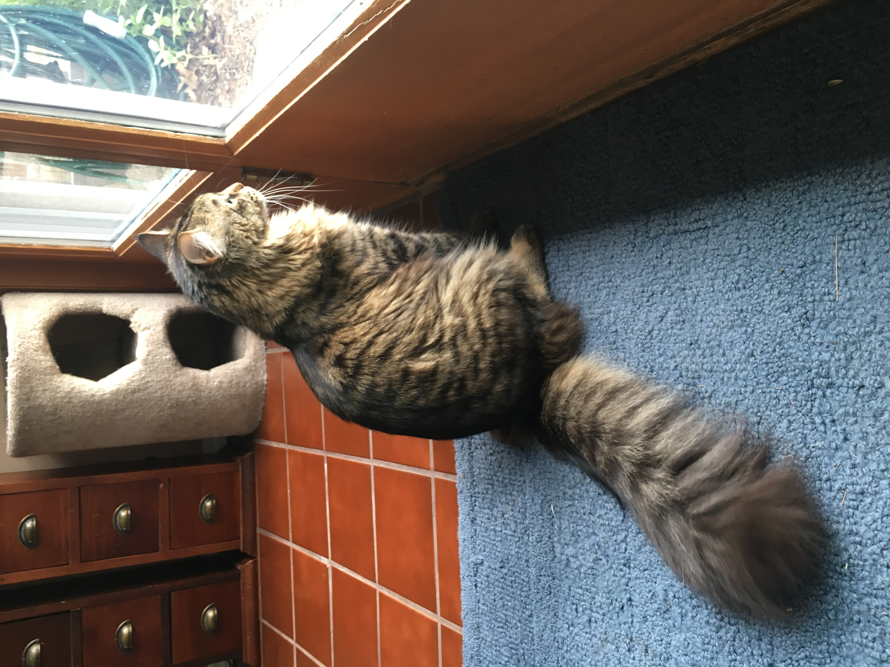
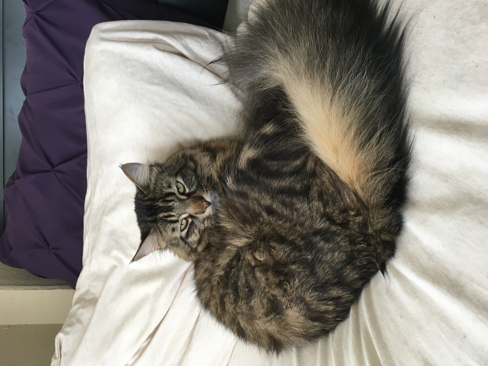
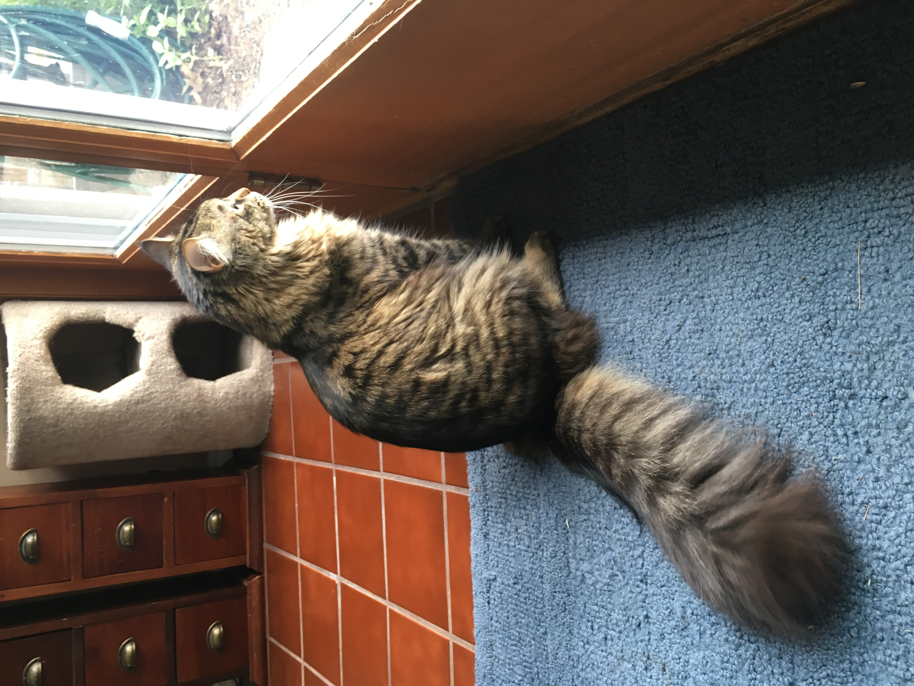
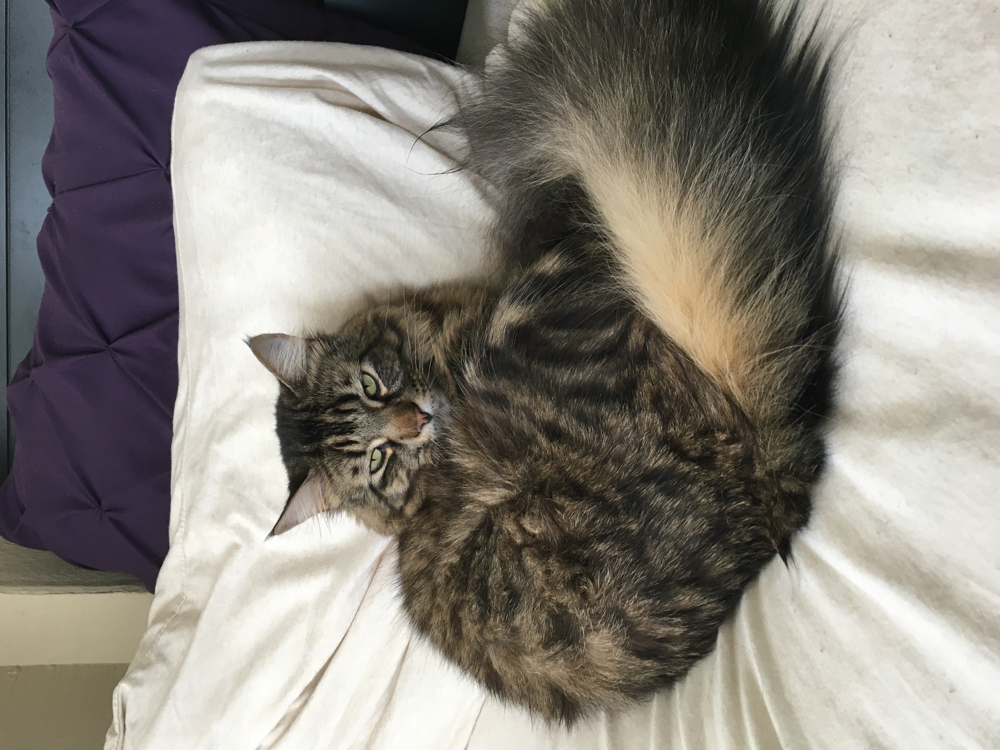

The Kitten Years
I got Keeks when he was just 6 weeks old. He was so tiny, curious, and not afraid of anything.
I got to bring my cat, Keeks, home on April 16th, 2018. He was one of four kittens in a litter that my friend's cat had given birth to. When I went to my friend's house to choose a kitten, Keeks was the only one brave enough to come say 'Hello'. Since that moment, he's been my favorite little guy. This webpage is going to be a Keeks appreciation page, so that everyone else can see how great he is.😄
I got Keeks when he was just 6 weeks old. He was so tiny, curious, and not afraid of anything.
As Keeks started growing, he turned into a giant fluff ball. This came as a bit of a surprise to me because his mom was a shorthair with all black fur. I came to the conclusion that his dad must have been a Maine Coon.
 



I had to get a new vacuum because of all the hair clumps he leaves around the apartment. He's worth it though.
Please enjoy some of my favorite photos of my boy.
I sincerely hope that you have enjoyed seeing Keeks in all his fluffy glory. I really don't know what I'd do without him in my life.😻
To me, Keeks > Any other cat
Thank you 😸